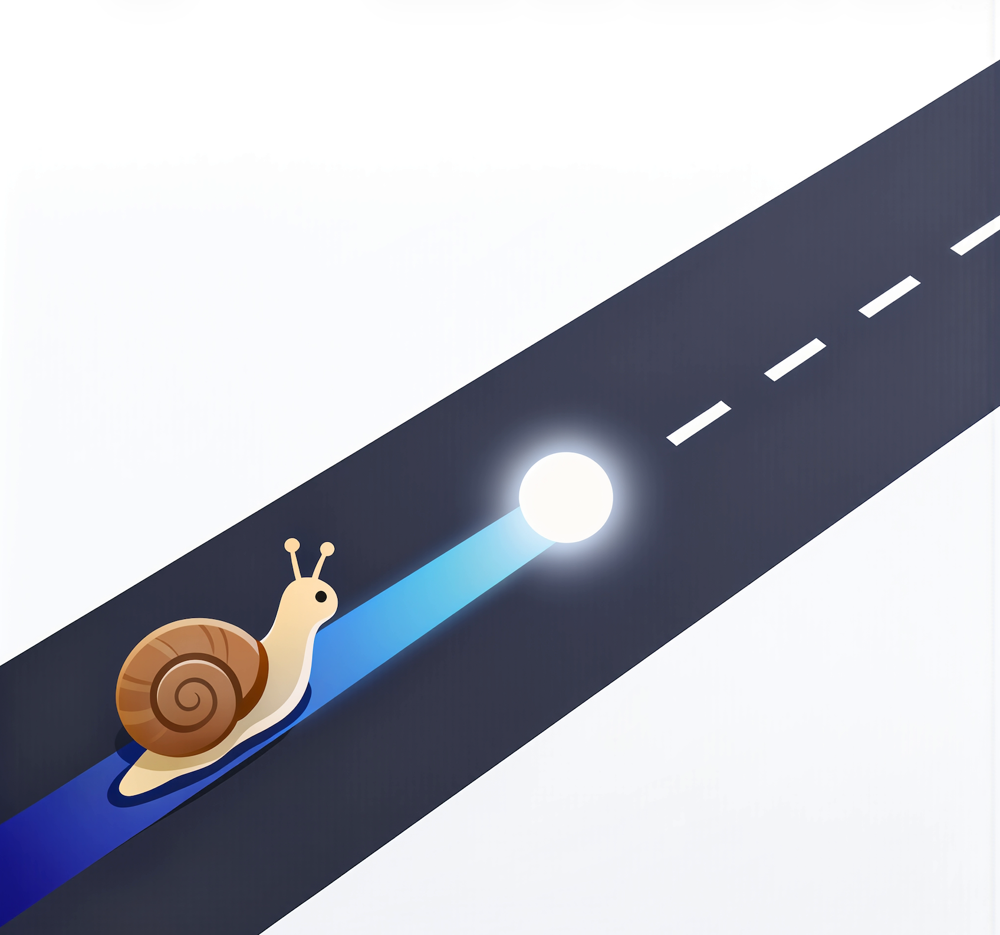

缕清思路
实现这个目标要做哪些事？突然想到了什么问题？准备怎么解决？问题驱动思路 边干边想，边想边干，自由记录

正确的路径比盲目的专注更加重要
实现这个目标要做哪些事？突然想到了什么问题？准备怎么解决？问题驱动思路 边干边想，边想边干，自由记录
做事的耗时远超预期没有停下思考？一件事做了半天没有进展？干着干着走神去做别的事情? 恰到好处的提醒，拒绝盲目的专注
感觉一天很忙，但是不知道自己在忙什么？想把自己的一天整理下来喂给AI? 自动记录，分析每一天
蜗迹更接近执行过程中的陪伴工具，而不是一个复杂的任务系统。视频比截图更能说明这一点。
因为 Apple Developer 账户还在申请中，当前版本还没有完成官方签名和公证。下载后如果看到系统提示，可以按下面的方式手动允许。
首次打开时，macOS 可能会提示无法验证开发者或阻止运行。
进入“隐私与安全性”，找到对应提示后选择继续打开，即可完成首次放行。
我以前会用 flomo 的置顶便签拆步骤、记待办。那样做确实有帮助，因为记录的过程本身，就是重新整理思路的过程。
后来我发现，自己缺的不是另一个单纯的记录工具，而是一个能在做事过程中提醒我继续思考、不要偏掉的东西。
于是我做了蜗迹，希望把记录和提醒轻轻放进执行过程里，让思路能更自然地被留下来。